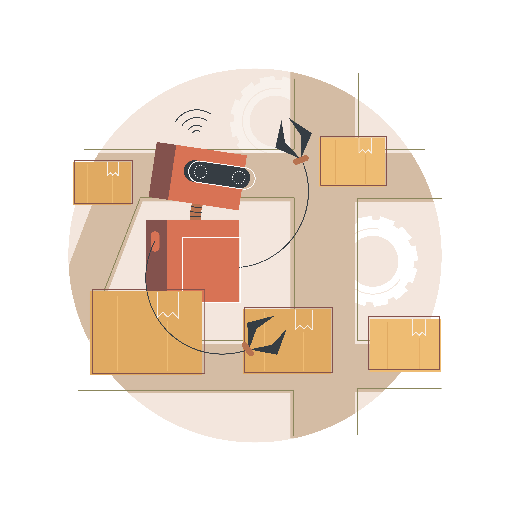
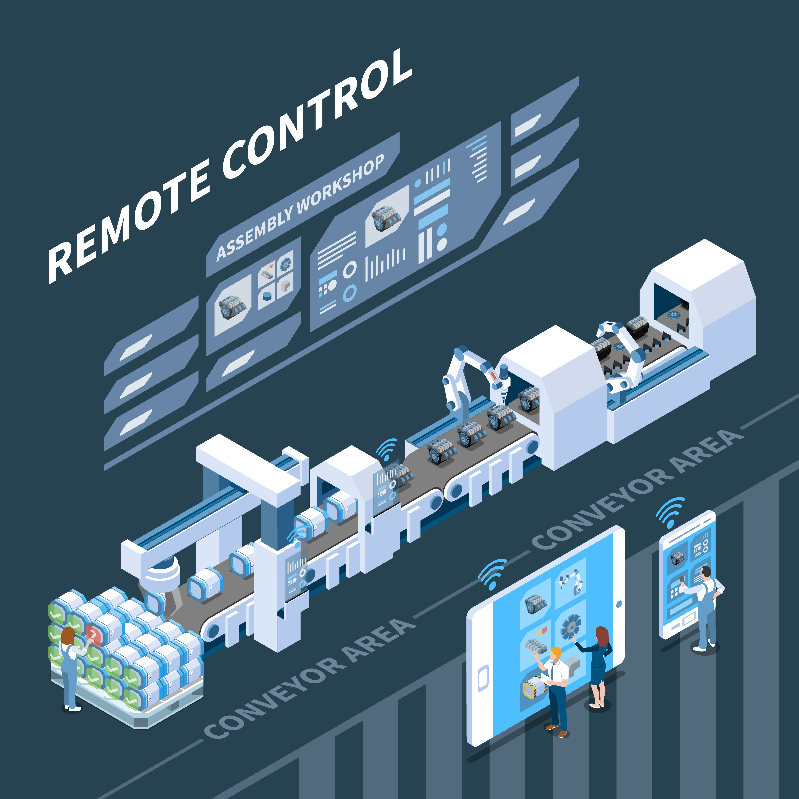

Control de inventarios
Determinación y manejo de los saldos de los diferentes inventarios, permitiendo un conocimiento y optimización de bodega a través del registro de entradas y salidas de insumos de la empresa

Producción
Aumento de la organización de la programación y gestión de la producción permitiendo acceder a solicitar insumos y un mayor control del consumo en la elaboración de cada uno de sus productos
Ventas
Gran evolución a la hora de administrar, almacenar y generar informes de las ventas realizadas así beneficiando a la empresa a satisfacer a los clientes en sus necesidades